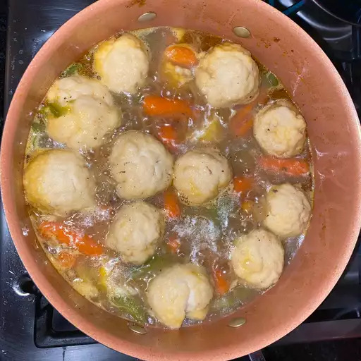

Dumplings

How to Make Homemade Dumplings
A dumpling is a small mass of dough that can be boiled, fried, baked, or steamed. There are a ton of dumpling varieties out there, from pork- and cabbage-filled Chinese dumplings to cheesy Polish dumplings. These boiled drop dumplings, which are popular in the U.S., are often paired with chicken and broth to create a popular comfort food called chicken and dumplings.They're prepared by dropping spoonfuls of dough into a pot of boiling soup or stew. The starch in the dumplings thickens the broth, resulting in a rich stew that's impossible to resist.
Making a dumpling can be time-consuming, but the results are well worth the wait. You'll find a detailed ingredient list and step-by-step instructions in the recipe below :
Ingredients:
- Flour:
These dumplings start with all-purpose flour, which creates structure and holds the other ingredients together.
- Powder:
Baking powder is a leavening agent, which means it releases gas that makes the dough expand. It's responsible for the dumplings' light and fluffy texture.
- Sugar:
A teaspoon of sugar adds an extremely subtle hint of sweetness. It also helps the dumplings retain their moisture through the cooking process and slows gluten development, which ensures tender dumplings.
- Salt:
A pinch of salt seasons the dumplings and enhances the flavors of the other ingredients.
- Butter or Margarine:
Cold butter or margarine is cut into the flour mixture to bind the dry ingredients together. It also keeps the dumplings light and tender.
- Milk:
Whole milk helps create a smooth, moist dough.
Steps:
- Stir together flour, baking powder, sugar, and salt in a bowl.
- Cut in butter until mixture is crumbly. Stir in milk and mix until a batter forms that is thick enough to be scooped with a spoon. Allow batter to rest for 3 to 5 minutes.
- Drop batter by spoonfuls into boiling stew or soup. Cover and simmer without lifting the lid for 15 minutes. Serve.
- Serve hot and enjoy!